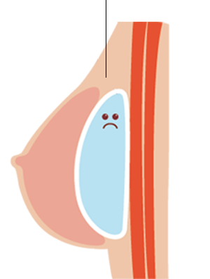
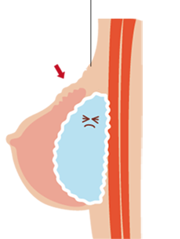

English
English
 繁體中文
繁體中文

隆乳手術聽說有分好幾種，哪個材質最適合我？放哪個位置最適合？擺脫平胸的困擾前，居然
還有一堆功課要做…
別擔心，關於隆乳手術的事前準備，只要看這一篇就能懂！ 基本上隆乳手術分為「自體脂肪隆乳」和「果凍矽膠隆乳」兩種方式，若要簡單來說，就是分成自體和假體兩種，這邊分析一下手術的差異。
自體脂肪隆乳 是抽取出自己其他部位的脂肪，再回填至胸部，適合想修飾胸形、大小奶、產後胸部下垂以及沒辦法接受填充物隆乳的人，手術減肥的同時也能讓乳房增大。
自體脂肪隆乳的優勢在於較自然，且風險較低，因為是自己體內的脂肪，術後不僅不用按摩，身體也不會產生排斥，更沒有*莢膜攣縮的問題。
缺點是為每次手術最多只能增大1.5個罩杯，適合胸部本身已有B Cup以上者。
果凍矽膠隆乳是將義乳植入胸部組織下，目前台灣常見的義乳主要有 Sebbin柔滴、 Motiva魔滴、 Mentor水滴義乳、圓形義乳、光滑面義乳、絨毛面義乳，優勢在義乳種類選擇較多，可以挑選自己適合的義乳大小、材質，來到最好的視覺效果。
另一個優點，是一次能升級多個罩杯，但同時也是果凍矽膠的缺點，因為體內可能產生排斥反應，導致莢膜攣縮。
人體植入外來物後，身體的保護機制會自動形成纖維組織，也就是所謂的「莢膜」，如果假體產生組織無法攀附或排斥，就會有一層厚厚的莢膜，這時又不頻繁按摩，組織堆疊就會變厚，變硬，造成 莢膜攣縮，變成又醜又硬的石頭（坊間俗稱的石頭奶），嚴重的話還會造成乳房位移。
莢膜薄且周圍寬敞
乳房外觀正常
莢膜增厚變硬
變化過程
莢膜收緊變形
乳房變形
1、抽脂手術
開始隆乳手術前，會先做
抽脂手術，抽脂的部位常會選擇大面積，如大腿、腹部作為供脂區，因為這些部位的脂肪細胞比較大，可抽取較深層脂肪細胞，接觸的血管比較少，安全性比較高。
抽取出的脂肪經過離心及純化技術後，將健康的黃金脂肪細胞，均勻的填充在胸部皮下、筋膜、肌肉和脂肪層，一次補脂量建議為250-300cc，避免因皮膚過緊，在沒有足夠空間下又補過多脂肪，導致脂肪鈣化或流失。
2、手術切口
自體脂肪隆乳的手術切口，會在注射脂肪的入針處，大多是腋下皺褶或乳房邊緣處，傷口相當小僅0.2公分，傷口癒合後幾乎不留疤。而抽脂手術的切口則視抽脂部位而定，通常會隱藏在大腿內側等不易發現的位置。
3、副作用
一般而言，自體脂肪隆乳的原物料是自身其他部位的脂肪移植，不會有任何排斥情形，但仍容易發生3種副作用，分別為鈣化、液化和流失，讓脂肪存活率下降，通常是術後照顧不佳或過度減肥導致。即便注重術後保養，仍有約30%填補至胸部的脂肪會流失。（延伸閱讀：如何提高脂肪存活率？）
1、手術切口
「隆乳切口」是手術過程中義乳進入體內的入口， 不管放入何種材質，均會產生4公分大小的傷口，最大的差異在於不同切口位置，會影響到術後疤痕的呈現方式。
目前的隆乳手術切口，有腋下、乳暈、乳下緣、肚臍4種，利用這張圖表，就能一目瞭然4個位置的優缺點。
| 腋下 | 乳暈 | 乳下緣 | 肚臍 | |
|---|---|---|---|---|
| 施作難度 |

|
|||
| 優點 |
最不傷害乳腺組織，傷口較隱密， |
離乳房比較近， |
手術難度低且 |
傷口最不容易被發現 |
| 缺點 |
腋下到乳房的距離最 |
可能會破壞乳腺、 乳頭神經， 且術後感染率較高。 |
疤痕較容易被 |
距離義乳放置位置較遠， |
2、義乳植放位置
選擇完切口，下一步就是要了解義乳植放位置。
一般而言，有3個地方可以選擇，分別是胸大肌下、筋膜下、乳腺下。當然，每個位置都各有優缺點，自己的體質適合放哪一個位置，在術前必須跟醫師詳細討論！
A胸大肌下
B筋膜下
C乳腺下
優點：莢膜攣縮率、感染率低，比較適合體型偏瘦的人，術後也不容易被發現。
缺點：出血量會較多，但目前使用*內視鏡隆乳，已可大幅降低出血量。
優點：出血量少，術後疼痛感較低，且容易擠出乳溝。
缺點：體型偏瘦的人，若皮下脂肪不夠，容易被發現義乳邊緣皺褶。
優點：出血量較少。
缺點：莢膜攣縮率高，且容易感染，大部分醫師通常不建議放置於乳腺下。
內視鏡隆乳是在有攝影鏡頭的輔助下進行手術，相較於傳統隆乳手術，僅能靠醫師的純熟經驗及手工技術，才能減少術後義乳周圍的血腫。
內視鏡隆乳補足了傳統隆乳手術的缺點，可清晰完整地看見義乳口袋內的一切狀況，因此所有的出血點都能夠確切的止血。並且整形醫師能在皮膚上畫出曲線很精準的義乳口袋，就能利用內視鏡在口袋內，將胸大肌與胸骨鋸齒狀的連結處，利用電燒的方式剝離出一個與皮膚畫線一模一樣、很平順圓滑的界限。
無論胸大肌發達或薄弱，用內視鏡隆乳的做法，術後的乳溝曲線都能快速浮現，大小也剛剛好。此外，內視鏡隆乳手術也能在血管破裂出血前，就先電燒將血管壁凝結。只要出血量越少，就不需使用引流管，加速傷口復原速度，出血刺激造成的疼痛感會下降，莢膜巒縮的機率相對大幅減少，提高患者術後滿意度！
3.一般術前規劃 vs 3D模擬圖
做隆乳手術，都是希望術後有一個完美又漂亮的胸形，以往只能與醫師討論，自己想像術後的呈現樣子，現在有了3D模擬，不但能模擬出術後以正面、45度側面、正側面、平躺胸形的樣子，還可以選擇不同的義乳材質，模擬術後的效果，也能模擬乳房的大小，進一步確認自己適合什麼尺寸！
自體脂肪隆乳：
通常會在6萬至18萬的區間，醫師技術以及診所含括的術後服務，都會影響到整體的費用。
» 無痕補胸再升級，豐胸塑身雙重滿足果凍矽膠隆乳：
通常落在16萬到35萬的區間，不同義乳的材質、種類，是價差落差的主因，像是最新的Sebbin柔滴、Motiva魔滴，價格至少都要30萬起跳。（延伸閱讀：魔滴、柔滴、曼陀哪個好？ 果凍矽膠隆乳材質大揭密！）
不過，最貴的不一定是最好，也不一定最適合你，有隆乳的需求，建議還是要先和醫師討論，決定哪種材質能呈現最美的義乳，再進行手術！
» 香榭柔滴極度柔軟，隆乳材質新選擇